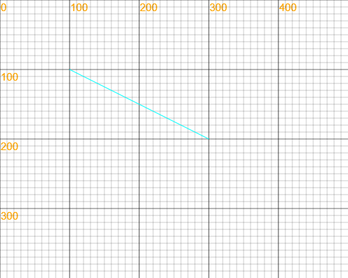
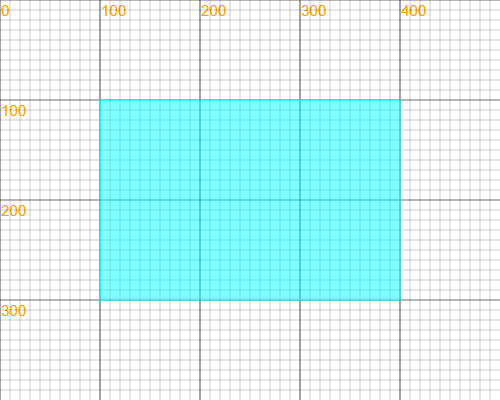

《Learning Programing with LeapLearner (CS II)》教材Chapter 1 丰富的颜色Lesson 1 使用常见颜色想一想试一试做一做Lesson 2 使用Web标准色做一做Chapter 2 图形的属性Lesson 3 认识坐标试一试做一做Lesson 4 线段的属性试一试做一做Lesson 5 圆形的属性试一试想一想做一做Lesson 6 矩形的属性试一试做一做Lesson 7 复习和测试做一做Chapter 3 动画基础Lesson 8 动画的秘密试一试Lesson 9 动画秘诀：setInterval试一试拓展练习Lesson 10 让形状移动试一试试一试做一做Lesson 11 任意方向的移动试一试做一做Lesson 12 复习和测试做一做拓展练习Chapter 4 多媒体素材Lesson 13 图片的格式试一试做一做Lesson 14 图片的属性试一试做一做Lesson 15 使用立乐音乐库试一试做一做Lesson 16 添加音效做一做Chapter 5：事件与交互Lesson 17 鼠标点击事件（1）试一试做一做Lesson 18 鼠标点击事件（2）想一想做一做Lesson 19 键盘按键事件（1）试一试做一做Lesson 20 键盘按键事件（2）想一想试一试做一做Lesson 21 对象的点击事件（1）做一做Lesson 22 对象的点击事件（2）做一做Lesson 23 事件综合练习Lesson 24 复习和测试
《Learning Programing with LeapLearner (CS II)》教材
Chapter 1 丰富的颜色
Lesson 1 使用常见颜色
在JS中，我们可以输入颜色的英文名称，使用到丰富多彩的颜色。在使用颜色时，我们要用一对引号（" "）将颜色名称的英文单词包起来。例如，在使用黑色的时候，我们需要输入的是"black"。
想一想
你在生活中见过哪些颜色？
你能说出几种颜色的名字？
你能说出几种颜色的英文名字？
试一试
填出彩虹七种颜色的英文单词：
红色：（ ） 橙色：（ ） 黄色：（ ） 绿色：（ ） 青色：（ ） 蓝色：（ ） 紫色：（ ）
做一做
画出彩虹：
参考代码：
xcanvas.width = 400;canvas.height = 300;var c1 = new Circle(200,400,350);c1.fillStyle = "red";c1.fill();var c2 = new Circle(200,400,335);c2.fillStyle = "orange";c2.fill();var c3 = new Circle(200,400,320);c3.fillStyle = "yellow";c3.fill();var c4 = new Circle(200,400,305);c4.fillStyle = "green";c4.fill();var c5 = new Circle(200,400,290);c5.fillStyle = "cyan";c5.fill();var c6 = new Circle(200,400,275);c6.fillStyle = "blue";c6.fill();var c7 = new Circle(200,400,260);c7.fillStyle = "purple";c7.fill();var c8 = new Circle(200,400,245);c8.fillStyle = "white";c8.fill();
Lesson 2 使用Web标准色
在网页上，不仅是彩虹的7种颜色，有许多颜色都已经被命了名，这可以大大方便我们使用自己想要的颜色，创作更美的作品。
这些颜色都可以在这个网址中找到：http://web.chacuo.net/
如下图所示，点击色块，该颜色的名称就出现在左上角的框中，可以直接使用。

做一做
从Web标准色中选择你喜欢的颜色，为下列代码项目填色：
项目代码：
xxxxxxxxxxcanvas.width = 500;canvas.height = 500;var bg = new Sprite('http://owtvvc2bc.bkt.clouddn.com/BG2.png',0,0,500,500);var body = new Ellipse(175,250,150,180);var eye1 = new Ellipse(130,170,65,55);var eye2 = new Ellipse(220,170,65,55);var tripe = new Ellipse(175,290,130,140);var leftEye = new Circle(125,180,35);var leftEye2 = new Circle(125,180,20);var leftEye3 = new Circle(125,180,10);var rightEye = new Circle(225,180,35);var rightEye2 = new Circle(225,180,20);var rightEye3 = new Circle(225,180,10);var mouth = new Triangle(160,220,190,220,175,255);var ball = new Circle(100,100,30);var isWaveLeft = 0;var waveLeft = 0;var shout = new Audio();shout.src = "http://rss.leaplearner.com/Audio/Com/touch.mp3";var hit = new Audio();hit.src = 'http://rss.leaplearner.com/Audio/Dinner/closeui.mp3';var moveX = 0;var moveY = 0;var Color = {eyeBall: "grey",eyeRim: "lightgrey",eyeCore: "white",tripe: "grey",feather: "lightgrey",ball: "lightgrey",beak: "lightgrey"};var myColor = {eyeBall: "",eyeRim: "",eyeCore: "",mouth: "",tripe: "",feather: "",ball: "",beak: ""};var Speed = {ballX: 7,ballY: 4};leftEye3.moveX = 0;leftEye3.moveY = 0;rightEye3.moveX = 0;rightEye3.moveY = 0;tripe.fillStyle = Color["tripe"];eye1.fillStyle = Color["tripe"];eye2.fillStyle = Color["tripe"];body.fillStyle = Color["feather"];leftEye.fillStyle = Color["eyeRim"];leftEye2.fillStyle = Color["eyeBall"];leftEye3.fillStyle = Color["eyeCore"];rightEye.fillStyle = Color["eyeRim"];rightEye2.fillStyle = Color["eyeBall"];rightEye3.fillStyle = Color["eyeCore"];ball.fillStyle = Color["ball"];;mouth.fillStyle = Color["beak"];function Loop() {tripe.fillStyle = (myColor["tripe"] === "") ? Color["tripe"] : myColor["tripe"];eye1.fillStyle = (myColor["tripe"] === "") ? Color["tripe"] : myColor["tripe"];eye2.fillStyle = (myColor["tripe"] === "") ? Color["tripe"] : myColor["tripe"];body.fillStyle = (myColor["feather"] === "") ? Color["feather"] : myColor["feather"];leftEye.fillStyle = (myColor["eyeRim"] === "") ? Color["eyeRim"] : myColor["eyeRim"];leftEye2.fillStyle = (myColor["eyeBall"] === "") ? Color["eyeBall"] : myColor["eyeBall"];leftEye3.fillStyle = (myColor["eyeCore"] === "") ? Color["eyeCore"] : myColor["eyeCore"];rightEye.fillStyle = (myColor["eyeRim"] === "") ? Color["eyeRim"] : myColor["eyeRim"];rightEye2.fillStyle = (myColor["eyeBall"] === "") ? Color["eyeBall"] : myColor["eyeBall"];rightEye3.fillStyle = (myColor["eyeCore"] === "") ? Color["eyeCore"] : myColor["eyeCore"];mouth.fillStyle = (myColor["beak"] === "") ? Color["beak"] : myColor["beak"];ball.fillStyle = (myColor["ball"] === "") ? Color["ball"] : myColor["ball"];canvas.clear();bg.draw();ball.x += Speed["ballX"];ball.y += Speed["ballY"];mouth.points[2].y = 250 + waveLeft;if (ball.x < ball.r || ball.x > (canvas.width - ball.r)) {Speed["ballX"] = -Speed["ballX"];hit.play();}if (ball.y < ball.r || ball.y > (canvas.height - ball.r)) {Speed["ballY"] = -Speed["ballY"];hit.play();}if (isWaveLeft == 1) {waveLeft += 0.5;if (waveLeft > 10) {isWaveLeft = -1;}}if (isWaveLeft == -1) {waveLeft -= 0.5;if (waveLeft <= 0) {waveLeft = 0;isWaveLeft = 0;}}foot(110,410,10,30,-1,waveLeft);foot(240,410,10,30,1,-waveLeft);ear(110,95,20,50,-1,-waveLeft);ear(240,95,20,50,1,waveLeft);body.fill();eye1.fill();eye2.fill();tripe.fill();leftEye3.look(ball);rightEye3.look(ball);leftEye.fill();leftEye2.fill();leftEye3.fill();rightEye.fill();rightEye2.fill();rightEye3.fill();feather(135,360,15,30 + waveLeft/2,Color["feather"]);feather(175,360,15,30 + waveLeft/2,Color["feather"]);feather(215,360,15,30 + waveLeft/2,Color["feather"]);feather(115,310,15,30 + waveLeft/4,Color["feather"]);feather(155,310,15,30 + waveLeft/4,Color["feather"]);feather(195,310,15,30 + waveLeft/4,Color["feather"]);feather(235,310,15,30 + waveLeft/4,Color["feather"]);feather(95,260,15,30 + waveLeft/2,Color["feather"]);feather(135,260,15,30 + waveLeft/2,Color["feather"]);feather(175,260,15,30 + waveLeft/2,Color["feather"]);feather(215,260,15,30 + waveLeft/2,Color["feather"]);feather(255,260,15,30 + waveLeft/2,Color["feather"]);mouth.fill();ball.fill();nextFrame(Loop)}function feather(x,y,rx,ry,color) {var a = new Ellipse(x,y,rx,ry);var b = new Rectangle((x-rx),(y-ry),(2*rx),ry);a.strokeStyle = color;b.fillStyle = tripe.fillStyle;b.strokeStyle = tripe.fillStyle;a.lineWidth = 3;b.lineWidth = a.lineWidth + 1;a.stroke();b.draw();}function foot(x,y,rx,ry,side,moveD) {var a = new Ellipse(x,y,rx,ry);a.fillStyle = body.fillStyle;a.setAnchor(x,y);a.rotate(moveD);a.fill();a.rotate(-10*side + moveD);a.translate(10*side,0);a.fill();a.rotate(-20*side + moveD);a.translate(20*side,0);a.fill();}function ear(x,y,rx,ry,side,moveD) {var a = new Ellipse(x,y,rx,ry);a.fillStyle = body.fillStyle;a.setAnchor(x,y);a.rotate(-15*side + moveD);a.fill();}function LookAt(goal) {var size = 7/Math.sqrt((goal.x-this.x)*(goal.x-this.x)+(goal.y-this.y)*(goal.y-this.y));this.translate((goal.x-this.x)*size,(goal.y-this.y)*size);}function moveEar() {isWaveLeft = 1;shout.play();}leftEye3.look = LookAt;rightEye3.look = LookAt;Mouse.click = moveEar;//----------------------------------------------myColor = {feather: "", //羽毛的颜色eyeRim: "", //眼眶的颜色eyeBall: "", //眼珠的颜色eyeCore: "", //眼珠中心的颜色tripe: "", //肚子的颜色beak: "", //嘴的颜色ball: "" //小球的颜色};Speed = {ballX: 3, //小球向右移动的速度ballY: 2 //小球向下移动的速度};loadRssAndRun(Loop);
Chapter 2 图形的属性
Lesson 3 认识坐标
为了定义空间的位置，数学家们发明了坐标的概念，在此至上发展出了庞大的几何学科。在计算机图形中，坐标系统更是不可或缺。
我们将左上角的坐标定义为(0,0)，把水平轴为x轴，把垂直坐标定义为y轴。平面上的任意一个点，在x轴上的投影称之为该点的x坐标，同样，在y轴上的投影即y坐标。因此，整个坐标系看起来像是这个样子的。

只要确定了坐标点的值，我们就能很容易的确定坐标的位置了。比如点（250，150）在坐标轴上的位置，我们就可以很容易找出来了。

试一试
请说出以下各点的坐标：
A：( , ) B：( , ) C：( , ) D：( , )
请在下列坐标系中标出以下几个点的位置
A：(200 , 100) B：(200,300) C：(100,300) D：(300,300)
为了方便我们使用坐标，在我们的开发环境中，只要将鼠标移动到画布上，在画布的左下角就会显示鼠标当前位置的坐标。
要学会巧妙使用哦！
做一做
让小红回家
Lesson 4 线段的属性
我们已经学习过如何创建线段，并将它画出来，你还记得是怎样做的吗？
试一试
在代码的对应位置填入正确的数字，让其画出的线段如图所示：

xxxxxxxxxxvar line = new Line(_____,_____,_____,_____);line.draw();
线段的宽度
如果我们想要画一条更粗的线，应该怎么办呢？
这时候，我们就要改变线段的宽度了。
线段默认的宽度是1，我们要将它改为5，就需要在画出线条前重新设定线条的宽度。
因此我们要在
line.draw();前增加一行代码，完整代码如下：xxxxxxxxxxvar line = new Line(50,50,150,150);line.lineWidth = 5;line.draw();其中，
lineWidth是线段的一个属性，表示的是线段的线条宽度，我们可以将它设置为任意一个大于0的数字。线段的颜色
如果要改变线段的颜色，又应该怎么办呢？
类似的，我们在
line.draw();前增加一行代码，就可以重新设置线段的颜色了。完整代码如下：
xxxxxxxxxxvar line = new Line(50,50,150,150);line.lineWidth = 5;line.strokeStyle = "red";line.draw();其中，
strokeStyle是线段的另一个属性，它表示的是线段的线条颜色，我们可以将它设置为任意颜色。注意，颜色的名称外一定要加上一对" "哦！
做一做
adidas是世界著名的运动品牌，它的标志由三条斜杠组成，代表山区，指出实现挑战、成就未来和不断达成目标的愿望。

你能仿照上图，画出adidas的三条纹标志吗？
参考代码
xxxxxxxxxxcanvas.width = 400;canvas.height = 400;//画出左起第一条线var line1 = new Line(100, 170, 136, 230);line1.lineWidth = 40;line1.strokeStyle = "black";line1.draw();//画出左起第二条线var line2 = new Line(140, 130, 200, 230);line2.lineWidth = 40;line2.strokeStyle = "black";line2.draw();//画出左起第三条线var line3 = new Line(180, 90, 264, 230);line3.lineWidth = 40;line3.strokeStyle = "black";line3.draw();//画一条很宽的白线遮挡底部var line4 = new Line(80, 220, 290, 220);line4.lineWidth = 60;line4.strokeStyle = "white";line4.draw();
Lesson 5 圆形的属性
我们已经学习过如何创建圆形对象，并将它画出来，你还记得是怎样做的吗？
试一试
在代码的对应位置填入正确的数字，让其画出的线段如图所示：
xxxxxxxxxxvar circle = new Circle(_____,_____,_____);circle.draw();
想一想
观察下图中三个圆的画法，说说它们有什么不同？
图中演示了圆的三种画法：描边，填充和绘制。
- 描边：只画出圆的边线，如图中左边的圆所示
- 填充：只画出圆的内部，不画出边线，如图中中间的圆所示
- 绘制：同时画出圆的边线和内部，如图中右边的圆所示
我们接下来学习一下与描边和填充相关的知识。
描边：只画出圆的外框
如果想以描边的方式来画出圆，就不能使用
circle.draw();了，应该使用以下代码：xxxxxxxxxxvar circle = new Circle(100,100,50);circle.stroke();其中，
stroke()是圆的另一个方法，它的作用就是以描边的方式画出圆。改变描边的宽度和颜色
那么，我们如何改变圆形描边的宽度和颜色呢？在学习线段时，我们已经接触过这两个属性了。请看下面一段代码：
xxxxxxxxxxvar circle = new Circle(100,100,50);circle.lineWidth = 7;circle.strokeStyle = "blue";circle.stroke();它的效果如下图所示：
其中：
- lineWidth控制的是圆形描边的宽度，可以设置成任意大于0的数字，
circle.lineWidth = 7;就是将circle这个圆的描边宽度设置为了7 - strokeStyle控制的是圆形描边的颜色，可以设置成任意颜色，
circle.strokeStyle = "blue";就是将circle这个圆的描边设置为了蓝色
- lineWidth控制的是圆形描边的宽度，可以设置成任意大于0的数字，
填充：只画出圆的内部
如果想以填充的方式来画出圆，需要使用的是
fill()方法，如以下代码所示：xxxxxxxxxxvar circle = new Circle(100,100,50);circle.fill();fill()方法的作用就是以填充方式画出圆。改变填充颜色
我们也可以改变填充颜色，需要用到的属性是
fillStyle，请看以下代码：xxxxxxxxxxvar circle = new Circle(100,100,50);circle.fillStyle = "yellow";circle.fill();这段代码的效果如下：
其中，
fillStyle可以设置成任意颜色，circle.fillStyle = "yellow";就是将circle这个圆的填充颜色设置为了黄色
做一做
奥运五环，是我们非常熟悉的一个标志。它由蓝、黄、绿、红、黑五个颜色的圆环组成，象征世界上承认奥林匹克运动，并准备参加奥林匹克竞赛的五大洲。请参考五环标志图，用代码画出五环标志。
- 参考代码
xxxxxxxxxxcanvas.width = 300;canvas.height = 200;var circle1 = new Circle(50, 70, 40);circle1.lineWidth = 8;circle1.strokeStyle = "blue";circle1.stroke();var circle2 = new Circle(150, 70, 40);circle2.lineWidth = 8;circle2.strokeStyle = "black";circle2.stroke();var circle3 = new Circle(250, 70, 40);circle3.lineWidth = 8;circle3.strokeStyle = "red";circle3.stroke();var circle4 = new Circle(100, 110, 40);circle4.lineWidth = 8;circle4.strokeStyle = "yellow";circle4.stroke();var circle5 = new Circle(200, 110, 40);circle5.lineWidth = 8;circle5.strokeStyle = "green";circle5.stroke();

Lesson 6 矩形的属性
我们已经学习过如何创建矩形对象，并将它画出来，你还记得是怎样做的吗？
试一试
在代码的对应位置填入正确的数字，让其画出的矩形如图所示：

xxxxxxxxxxvar rect = new Rectangle(_____,_____,_____,_____);rect.draw();
- 矩形的描边与填充
如上图所示，与圆形类似，矩形也有三种画法：描边、填充和绘制
描边：只画出矩形的边线，如图中上方的矩形所示。它的方法是
stroke()，完整代码如下：xxxxxxxxxxvar rect = new Rectangle(50,50,150,100);rect.stroke();填充：只画出矩形的内部，不画出边线，如图中中间的矩形所示。它的方法是
fill()，完整代码如下：xxxxxxxxxxvar rect = new Rectangle(50,50,150,100);rect.fill();绘制：同时画出圆的边线和内部，如图中右边的圆所示。这也是我们一开始就学习的方法
draw()，完整代码如下：xxxxxxxxxxvar rect = new Rectangle(50,50,150,100);rect.fill();
矩形的描边宽度和颜色
如何改变矩形描边的宽度和颜色呢？与圆形类似，我们用
lineWidth和strokeStyle两个属性来控制它们。请看以下代码xxxxxxxxxxvar rect = new Rectangle(50,50,150,100);rect.lineWidth = 10;rect.strokeStyle = "green";rect.stroke();它的效果如下图所示：
其中：
- lineWidth控制的是矩形描边的宽度，可以设置成任意大于0的数字，
rect.lineWidth = 10;就是将rect这个矩形的描边宽度设置为了10 - strokeStyle控制的是矩形描边的颜色，可以设置成任意颜色，
rect.strokeStyle = "green";就是将rect这个矩形的描边设置为了绿色
- lineWidth控制的是矩形描边的宽度，可以设置成任意大于0的数字，
矩形的填充颜色
我们也可以改变矩形的填充颜色，需要用到的属性是
fillStyle，请看以下代码：xxxxxxxxxxvar rect = new Rectangle(50,50,150,100);rect.fillStyle = "pink";rect.fill();这段代码的效果如下：
其中，
fillStyle可以设置成任意颜色，rect.fillStyle = "pink";就是将rect这个矩形的填充颜色设置为了粉色
做一做
中国银行是我国的货币发行银行，是中国金融商界的代表，具有非常重要的地位，它的标志也非常有特色。

这个标志是由古钱造型和“中”字结合而来的，简洁明了，寓意深刻。你能结合学过的知识，用代码将它画出来吗？
参考代码
xxxxxxxxxxcanvas.width = 400;canvas.height = 400;var circle = new Circle(200, 200, 100);circle.lineWidth = 20;circle.strokeStyle = "red";circle.stroke();var line1 = new Line(200, 100, 200, 160);line1.lineWidth = 20;line1.strokeStyle = "red";line1.draw();var rect = new Rectangle(160, 165, 80, 70);rect.lineWidth = 20;rect.strokeStyle = "red";rect.stroke();var line2 = new Line(200, 240, 200, 300);line2.lineWidth = 20;line2.strokeStyle = "red";line2.draw();
Lesson 7 复习和测试
做一做
我是小画家
用学过的知识，创作一幅自己的画作。
需要给予学生方向性的指导，例如：画面上必须有什么形状
Chapter 3 动画基础
Lesson 8 动画的秘密
1872年的一天，在美国加利福尼亚州一个酒店里，斯坦福与科恩发生了激烈的争执：马奔跑时蹄子是否都着地？斯坦福认为奔跑的马在跃起的瞬间四蹄是腾空的；科恩却认为，马奔跑时始终有一蹄着地。争执的结果谁也说服不了谁，于是就采取了美国人惯用的方式打赌来解决。他们请来一位驯马好手来做裁决，然而，这位裁判员也难以断定谁是谁非。这很正常，因为单凭人的眼睛确实难以看清快速奔跑的马蹄是如何运动的。裁判的好友——英国摄影师麦布里奇知道了这件事后，表示可由他来试一试。他在跑道的一边安置了24架照相机，排成一行，相机镜头都对准跑道；在跑道的另一边，他打了24个木桩，每根木桩上都系上一根细绳，这些细绳横穿跑道，分别系到对面每架照相机的快门上。一切准备就绪后，麦布里奇牵来一匹漂亮的骏马，让它从跑道一端飞奔到另一端。当跑马经过这一区域时，依次把24根引线绊断，24架照相机的快门也就依次被拉动而拍下24张照片。麦布里奇把这些照片按先后顺序剪接起来。每相邻的两张照片动作差别很小，它们组成了一条连贯的照片带。裁判根据这组照片，终于看出马在奔跑时总有一蹄着地，不会四蹄腾空，从而判定科恩赢了。

动画的原理与电影是一样的。我们不断画出新的图形，他们连起来播放，就成为了动画。
试一试
在开发环境中输入以下代码，点击“运行”，根据操作提示操作，体验一下动画是怎么产生的。
演示代码
xxxxxxxxxxcanvas.width = 350;canvas.height = 462;canvas.preventDefaultEvent();var camera = new Sprite('http://p0msr3pkn.bkt.clouddn.com/camera.png', 0, 0, 350, 462);var leopard = new Sprite('http://p0msr3pkn.bkt.clouddn.com/run-01.png', 20, 110, 1088, 68);var nextBtn = new Circle(200, 75, 25);var line = new Line(194, 90, 85, 315);var txt = new Text("点击查看下一张", 20, 320);txt.fillStyle = "red";var index = 0;nextBtn.fillStyle = RGBA(255, 0, 0, 0.4);line.strokeStyle = "red";nextBtn.clicked = false;function Loop() {leopard.y = 110;leopard.x = 20 - 136 * index;canvas.clear();leopard.draw();camera.draw();nextBtn.fill();if (!nextBtn.clicked) {line.draw();txt.draw();}}nextBtn.click = function() {index = (index < 7) ? (index + 1) : 0;nextBtn.clicked = true;Loop();}Loop();
帧的概念
许多张不断切换的画面连接在一起，就形成了动画。在一段动画中，每一张单独的画面，就叫做一“帧”。电影的一般每秒都是24帧，也就是每秒会切换24幅画面。在以后的课程中，我们会多次使用到“帧”的概念。
Lesson 9 动画秘诀：setInterval
在JS中，我们可以通过setInterval函数来实现画面的自动切换。在画面自动切换时，我们关心两件事情：
- 每一帧画面是什么样子的？
- 每隔多久切换一帧画面？
因此，在使用setInterval时，我们需要定义两个参数。具体写法如下：
xxxxxxxxxxsetInterval(要执行的函数名称, 间隔时间);- 要重复执行的函数
要重复执行的函数决定了每一帧要显示的画面内容，我们可以在setInterval函数之前这样来定义：
xxxxxxxxxxfunction Loop() { canvas.clear(); //要执行的代码 }这是一种固定的写法，我们在后面的课程中将会深入学习，这里不深究。其中有两个地方可以改变：
Loop是这个函数的名称，如果要让Loop反复执行，就要将Loop写在setInterval的括号中“要执行的函数名称”的位置。- 在
//要重复执行的代码后面可以另起多行，将要执行的函数写在这一行和}之间，这样就可以告诉计算机我们要用这个函数画出的画面是什么。
- 间隔时间
间隔时间决定了每隔多久切换一帧，它的单位是毫秒。
想一想
1000毫米 = 1米，那么多少毫秒 = 1秒呢？
1000毫秒才是1秒，如果10毫秒切换一帧画面，那么1秒钟之内，我们就切换了100帧画面，而电影都才24帧，这得多快啊！
我们在setInterval的括号里“间隔时间”的位置填入10，就可以将间隔时间设置为10毫秒了。
于是，我们让Loop不断重复执行的完整代码框架如下：
xxxxxxxxxxfunction Loop() { canvas.clear(); //要重复执行的代码 }setInterval(Loop,10);接下来就可以往里面增加设置画面内容的代码了。
小贴士
如果暂时还不能完全理解，也没有关系哦，你只需要记住上面这段代码，然后往
//要执行的代码和}中增加要画出的代码就行了。
试一试
让我们一起来画出一个圆，并让它逐渐变大吧！
在代码框中输入以下代码：
xxxxxxxxxxcanvas.width = 350;canvas.height = 500;var circle = new Circle(175, 175, 5);function Loop() {canvas.clear();//要重复执行的代码circle.r = circle.r + 1;circle.draw();}setInterval(Loop,10);点击运行，查看效果。
- 分析代码
- 在这段代码中，
var circle = new Circle(175, 175, 5);创建了一个半径为5的圆circle.r代表的是这个圆的半径，在刷新的过程中，circle.r = circle.r + 1;让圆的半径每刷新一次就增加1，圆的大小也就一直增加circle.draw();在圆每次增大之后都将圆画出来- 从
setInterval(Loop,10);可以看出，每秒钟画面刷新100次，我们就看到了圆在不断变大
拓展练习
让自己画的作品动起来
Lesson 10 让形状移动
同样的，我们可以利用动画原理让圆形移动起来，我们只需要在刷新每一帧的时候改变圆形的位置即可。
试一试
输入以下代码，改变
circle.x和circle.y的值，看看会发生什么？
示例代码
xxxxxxxxxxvar circle = new Circle(175, 175, 50);circle.x = 175;circle.y = 175;circle.draw();
可以发现，通过改变这两个属性的值，可以改变圆形的位置。
circle.x代表圆心的x坐标，控制圆形的左右位置，x变大时圆形往右，x变小时圆形往左circle.y代表圆心的y坐标，控制圆形的上下位置，y变大时圆形往下，y变小时圆形往上
所以，如果我们想让圆形往右移动，应该怎么办呢？
试一试
让圆形往右移动
参考代码
xxxxxxxxxxcanvas.width = 350;canvas.height = 500;var circle = new Circle(50, 175, 10);function Loop() {canvas.clear();//要重复执行的代码circle.x = circle.x + 1;circle.draw();}setInterval(Loop,10);
做一做
你能让圆形往下移动吗？
参考代码
xxxxxxxxxxcanvas.width = 350;canvas.height = 500;var circle = new Circle(50, 50, 10);function Loop() {canvas.clear();//要重复执行的代码circle.y = circle.y + 1;circle.draw();}setInterval(Loop,10);
Lesson 11 任意方向的移动
我们已经知道，要让圆形移动，就要改变它的x或y属性。改变x可以让它在左右方向上移动，改变y可以让它在上下方向上移动。那如果我们要让它在斜向上移动，应该怎么办呢？
试一试
让圆形从左下角移动到右上角
参考代码
xxxxxxxxxxcanvas.width = 350;canvas.height = 500;var circle = new Circle(50, 450, 10);function Loop() {canvas.clear();//要重复执行的代码circle.x = circle.x + 1;circle.y = circle.y - 2;circle.draw();}setInterval(Loop,10);
可以看到，我们同时改变circle.x和circle.y，就可以让circle沿斜方向移动。从这个案例中我们可以看出，在同一帧中，可以改变多个属性。因为一帧的时间实在是太快了，我们可以认为这些改变是同时发生的。
做一做
你能够让圆形一边往左上角移动，一边变大吗？
参考代码
xxxxxxxxxxcanvas.width = 350;canvas.height = 500;var circle = new Circle(300, 450, 10);function Loop() {canvas.clear();//要重复执行的代码circle.x = circle.x - 1;circle.y = circle.y - 2;circle.r = circle.r + 0.2;circle.draw();}setInterval(Loop,10);
Lesson 12 复习和测试
这节课，我们将综合利用之前学到的知识，完成一幅日出动态图。
做一做
完成简单版的日出动态图，效果如https://code.leaplearner.com/show.html?v=4670所示。
参考代码
xxxxxxxxxxcanvas.width = 350;canvas.height = 550;var sky = new Rectangle(0, 0, 350, 400);sky.fillStyle = "cyan";var sea = new Rectangle(0, 400, 350, 150);sea.fillStyle = "blue";var sun = new Circle(200, 440, 40);sun.fillStyle = "red";function Loop(){canvas.clear();//要重复执行的代码sky.fill();sun.y -= 1;sun.fill();sea.fill();}setInterval(Loop, 10);
拓展练习
完成高级版日出动态图，在其中添加一些其它元素。
参考效果：https://code.leaplearner.com/show.html?v=4680
参考代码
xxxxxxxxxxcanvas.width = 350;canvas.height = 550;var sky = new Rectangle(0, 0, 350, 400);sky.fillStyle = "cyan";var sea = new Rectangle(0, 400, 350, 150);sea.fillStyle = "blue";var sun = new Circle(200, 440, 40);sun.fillStyle = "red";var cloud1 = new Circle(200, 205, 30);cloud1.fillStyle = "white";var cloud2 = new Circle(240, 200, 40);cloud2.fillStyle = "white";var cloud3 = new Circle(280, 205, 25);cloud3.fillStyle = "white";var cloud4 = new Circle(150, 105, 35);cloud4.fillStyle = "white";var cloud5 = new Circle(190, 100, 40);cloud5.fillStyle = "white";var cloud6 = new Circle(230, 105, 25);cloud6.fillStyle = "white";var water1 = new Line(40,430,170,430);water1.strokeStyle = "white";water1.lineWidth = 3;var water2 = new Line(110,475,280,475);water2.strokeStyle = "white";water2.lineWidth = 3;var water3 = new Line(70,510,210,510);water3.strokeStyle = "white";water3.lineWidth = 3;function Loop(){canvas.clear();//要重复执行的代码sky.fill();cloud1.x = cloud1.x + 0.1;cloud1.fill();cloud2.x = cloud2.x + 0.1;cloud2.fill();cloud3.x = cloud3.x + 0.1;cloud3.fill();sun.y -= 1;sun.fill();cloud4.x = cloud4.x - 0.2;cloud4.fill();cloud5.x = cloud5.x - 0.2;cloud5.fill();cloud6.x = cloud6.x - 0.2;cloud6.fill();sea.fill();water1.x = water1.x + 0.1;water1.draw();water2.x = water2.x + 0.1;water2.draw();water3.x = water3.x + 0.1;water3.draw();}setInterval(Loop, 10);
Chapter 4 多媒体素材
Lesson 13 图片的格式
看看下面这张图中的两个小恐龙，他们有什么不同呢？
我们发现，左边的恐龙是透明底的，而右边的却有一个白色的底。为什么会有这样的区别呢？这是因为它们的格式是不一样的。
- 左边的图片叫做PNG图片，它的底可以是透明的，特别适合作为游戏角色图片。
- 右边的图片叫做JPG图片，它的底不能是透明的，所以我们看到它的背景必须要有一个颜色，这里就是白色，这种格式的图片比较适合作为背景等。
那么我们如何分辨PNG图片和JPG图片呢？
很简单，我们看一下这两张图的名称，左边这张的名称是Dinosaur.png，右边这张的名称是Dinosaur.jpg，它们有什么不同呢？
对了！它们一个是以.png结尾的，一个是以.jpg结尾的。以.png结尾的就是PNG图片，以.jpg结尾的就是JPG图片。
课外小知识：什么是后缀名？
后缀名是表现文件的类型的一种方法，通常的写法是
文件名称.后缀名。文件名称可以自己决定，而同一种类型的文件后缀名则是固定的。这是一些其他的常用文件类型的后缀名：
.doc：Word文档，用微软的word等软件打开.wps：WPS文档，用金山公司的wps软件打开.xls：Excel电子表格，用微软的excel软件打开.ppt：Powerpoint演示文稿，用微软的powerpoint等软件打开.txt：纯文本，用记事本、写字板、word等都可以打开.rar：Winrar压缩文件，用winrar打开.html：网页文件，用浏览器打开
试一试
在下面这张图中，哪些图片是PNG？哪些图片是JPG？
做一做
选择正确的资源，组成一幅画
Lesson 14 图片的属性
在以前的课程中，我们已经学会了导入图片对象。现在我们来复习一下：
通过以下代码，就能导入图片对象：
xxxxxxxxxxvar sprite = new Sprite('https://static.leaplearner.com/image/image.png',150,200,40,40);再通过输入sprite.draw();，就能画出图片。
那么，如果我们要改变图片的位置、大小和内容，应该怎么办呢？
改变图片位置
改变图片位置的办法，和改变形状的位置类似，我们需要修改
x和y两个属性。请看以下代码：xxxxxxxxxxvar sprite = new Sprite('https://static.leaplearner.com/image/image.png',150,200,40,40);sprite.x = 100;sprite.y = 200;sprite.draw();这段代码将图片的位置从
(40, 40)移动到了(100, 200)。需要注意的是，这里的x和y指的都是图片左上角的位置。改变图片大小
图片大小受图片的宽度和高度两个属性影响，宽度和高度的意义如下图所示。
图片宽度的属性名为
width，图片高度的属性名为height。修改这两个属性的值，就可以改变图片的大小。请看以下代码：xxxxxxxxxxvar sprite = new Sprite('https://static.leaplearner.com/image/image.png',150,200,40,40);sprite.width = 200;sprite.height = 100;sprite.draw();这段代码将图片的宽度从150修改为了200，将图片的高度从200修改为了100。
改变图片链接
在代码中，决定图片内容的属性是图片的资源链接，我们用
src来表示它。如果要将图片的内容改变，只需要用新图片的链接替换旧图片的即可。请看以下代码：xxxxxxxxxxvar sprite = new Sprite('https://rss.leaplearner.com/Image/Animals/Frog.png',150,200,40,40);sprite.src = 'https://rss.leaplearner.com/Image/Animals/Dinosaur.png';sprite.draw();这段代码将图片内容由
 改变成了
改变成了
要特别注意的是，在替换图片链接的时候，链接两端的一对
' '或" "千万不能漏掉。
试一试
拼图游戏
在画布中有4张拼图，你能把它们放到正确的位置吗？
做一做
神奇动物在哪里
在中国传统中，龙是一种非常神奇的生物，它的身上有九种动物的特征：它的角像鹿、头像牛、眼睛像虾、嘴像驴、肚子像蛇、鳞片像鱼、爪子像凤、胡须像人、耳朵像大象。你能用这样的方式，创作自己的神奇动物吗？
任务：搜索动物不同部位的图片（注意是png还是jpg），用它们拼接成一个新的动物。
注意：在Lesson 21中，我们会再次用到你创造的神奇动物
Lesson 15 使用立乐音乐库
我们在开发环境中准备了素材丰富的音乐库，每个同学都可以很方便的使用。那么，如何使用呢？我们一起来试一试吧！
试一试
打开code.leaplearner.com，点击“文件”-“新建”，创建一个新项目，删掉右侧所有代码。
点击界面左侧
按钮，再点击“音乐”，查看音乐列表。
点击
fish，点击选择音乐ParkourTrack，右侧代码框就会出现一行代码，这段代码就可以播放音乐文件。
点击左上角的
运行，就能播放音乐了。
- 小贴士：如果不能播放，记得检查一下电脑的声音是否打开哦。
现在我们来研究一下这行代码：
xxxxxxxxxxplaySound('https://rss.leaplearner.com/BGM/Fish/ParkourTrack.mp3');在这行代码中，playSound是函数的名称，表示我们要播放音乐。那么具体是播放哪段音乐呢？这就是由括号里面的'https://rss.leaplearner.com/BGM/Fish/ParkourTrack.mp3'决定的了！这一长串字符叫做音乐链接，它是一个存放音乐的网址。我们在用它的时候，需要用一对' '（单引号）把它包括起来。
在播放完这段音乐后，音乐就停住了。但很多时候，我们都希望音乐能够不停地循环播放，这就需要我们用另一种方式来写代码了。
请看下面这段代码：
xxxxxxxxxxvar music = new Audio('https://rss.leaplearner.com/BGM/Fish/ParkourTrack.mp3');music.play();在这两行代码中：
- 我们用第一行代码创建了一个叫做
music的音乐对象，这个音乐对象的链接就是'https://rss.leaplearner.com/BGM/Fish/ParkourTrack.mp3' - 第二行代码中，
play是音乐对象music的一个方法，它的效果就是将这个音乐对象播放出来，使用music.play();我们就能播放音乐。
让音乐循环播放
那么，如何让音乐可以循环播放呢？我们只需要在
music.play();前加上一句music.loop = 1;即可。完整代码如下：xxxxxxxxxxvar music = new Audio('https://rss.leaplearner.com/BGM/Fish/ParkourTrack.mp3');music.loop = 1;music.play();其中：
loop是音乐对象music的一个属性，当这个属性的值为1时，music就会循环播放，当它为0时，music就只播放一遍。
做一做
音乐贺卡
以最近的一个节日为主题，做一张贺卡送给爸爸妈妈吧！
要求：
- 搜索节日主题图片，组合成一张漂亮的贺卡
- 给贺卡添加一段背景循环播放的背景音乐
Lesson 16 添加音效
//music.currentTime = 0;
做一做
- 我是DJ(串烧)
Chapter 5：事件与交互
Lesson 17 鼠标点击事件（1）
鼠标是家用电脑非常重要的一种输入设备，很多游戏中，我们都是通过鼠标点击来与计算机互动。这节课，我们将会学习如何用鼠标的点击来控制计算机绘制出的形状和图片。在学习之前，我们先一起熟悉一下鼠标的使用吧！
试一试
挑战鼠标点击游戏，达到20分过关
演示项目代码
xxxxxxxxxxcanvas.resize(350, 500);var circle = new Circle(0, 0, 20);circle.globalAlpha = 1;var ripple = circle.clone();var bgm = new Audio();bgm.src = "http://oq2qlcey8.bkt.clouddn.com/bgm.mp3";bgm.loop = true;bgm.play();var sound = new Audio();sound.src = "http://oq2qlcey8.bkt.clouddn.com/jump.mp3";var score = 0;var hiscore = 0;function randomInt(n){ return Math.floor(Math.random() * n); }function randomColor(){return "rgba(" + randomInt(250) + "," + randomInt(250) + "," + randomInt(250) + "," + (0.3 +Math.random()*0.5) + ")";}circle.init = function(){this.x = 15 + Math.random() * (canvas.width-30);this.y = 0;this.r = 30 + Math.random() * 20;this.fillStyle = randomColor();};circle.update = function(){this.yspeed = 1 + score*0.5;this.y += this.yspeed;};var blowUp = function(){this.globalAlpha *= 0.95;this.r += 3;};ripple.update = blowUp;circle.click = function(){score += 1;if(score > hiscore) hiscore = score;sound.currentTime = 0;sound.play();ripple = circle.clone();ripple.update = blowUp;ripple.click = null;circle.init();};function GameStart(){circle.init();score = 0;bgm.play();nextFrame(GameLoop);}var scoreMsg = new Text();var hiscoreMsg = new Text("", canvas.width-100, 0);function GameLoop(){canvas.clear();ripple.update();ripple.fill();circle.update();circle.fill();scoreMsg.src = "Score: " + score;scoreMsg.draw();hiscoreMsg.src = "HI: " + hiscore;hiscoreMsg.draw();if(iSGameOver())nextFrame(GameOver);elsenextFrame(GameLoop);}function iSGameOver(){return circle.y > canvas.height;}var retry = new Text("RETRY", 100, 250, 50);function GameOver(){retry.click = GameStart;retry.fill();}GameStart();
那么，我们如何用鼠标的点击来控制图形和图片呢？在JS中，鼠标被点击叫做一个“事件”，当这个“事件”发生的时候，我们就可以让代码做出相应的反应。
请看下面一段代码：
xxxxxxxxxxcanvas.width = 400;canvas.height = 300;var circle = new Circle(50,150,50);function Loop() { canvas.clear(); //要重复执行的代码 circle.draw();}Mouse.click = function() { circle.x = circle.x + 1;};setInterval(Loop,10);将这段代码复制粘贴到代码框，点击左侧画布后，点击鼠标左键，会发现，在鼠标点击时，圆形向右移动。
这个效果是如何实现的呢：
根据我们已经学过的知识，我们可以用以下代码画出一个不动的圆：
xxxxxxxxxxcanvas.width = 400;canvas.height = 300;var circle = new Circle(50,150,50);function Loop() {canvas.clear();//要重复执行的代码circle.draw();}setInterval(Loop,10);接下来，我们就只需要在
setInterval(Loop,10)前，加上发生鼠标点击事件使要产生的效果即可：xxxxxxxxxxMouse.click = function() {circle.x = circle.x + 1;};- 在这段代码中，
Mouse是代表鼠标的对象的名称，Mouse.click表示鼠标的点击事件。 Mouse.click = function() { };是一种固定的写法，在大括号{ }之间输入代码，用来表示点击鼠标时会发生的事情即可。- 在这个案例中，
circle.x = circle.x + 1是点击鼠标时会发生的事情，它表示将circle向右移动1的距离，所以整段代码表示：每当我们点击鼠标时，圆形就会向右移动1的距离，这也是我们看到的效果。
- 在这段代码中，
做一做
小猫快跑
黑魔法博士看上了一只可爱的小猫，想要用他来进行邪恶的实验，你能帮助小猫逃脱魔掌吗？
要求：
绘制黑魔法博士的图片，并让他不断往右移动
在黑魔法博士前方绘制一只小猫
利用鼠标点击事件控制小猫移动，让黑魔法博士不能追到他
素材图片：
参考代码
xxxxxxxxxxcanvas.width = 400;canvas.height = 300;var bg = new Sprite('https://rss.leaplearner.com/Image/Bgs/Alarm_frame_01.png',0,-300, 700, 600);var bad = new Sprite('https://rss.leaplearner.com/Image/Character/Einstein_walk.png',320,140,80,80);var cat = new Sprite('https://rss.leaplearner.com/Image/Animals/Cat_happy.png',160,140,80,80);function Loop() {canvas.clear();//要重复执行的代码bg.draw();bad.x = bad.x - 1;bad.draw();cat.draw();circle.draw();}Mouse.click = function() {cat.x = cat.x - 15;}setInterval(Loop,10);
{kind=link}
{kind=link}
Lesson 18 鼠标点击事件（2）
这节课，我们将继续学习鼠标点击事件。我们可以看到，鼠标点击事件不仅可以改变形状和图片的位置，还能改变它们的大小。
想一想
在上节课中，我们用鼠标点击事件控制了形状和图片的位置，我们让圆形向右移动，就让它的
x属性增大。那么，如果我们要改变圆形或图片的大小，应该怎么办呢？
控制圆形的大小
控制圆形大小的属性是圆形的半径，它的名称是
r，所以我们改变圆形对象circle的大小，就应该：- 变大：
circle.r = circle.r + 1; - 变小：
circle.r = circle.r - 1;
- 变大：
控制图片的大小
图片对象的大小被它的宽度和高度决定，宽度的属性名是
width，高度的属性名是height，所以，我们如果要控制图片对象sprite的大小，就应该：- 让图片变宽：
sprite.width = sprite.width + 1; - 让图片变窄：
sprite.width = sprite.width - 1; - 让图片变高：
sprite.height = sprite.height + 1; - 让图片变矮：
sprite.height = sprite.height - 1;
- 让图片变宽：
做一做
热气球升空
要求：用一个绿色的圆形代表热气球，它会不断变小并且降落，在鼠标点击时又越来越大且网上升起。
参考代码
xxxxxxxxxxcanvas.width = 400;canvas.height = 300;var circle = new Circle(200,50,50);circle.fillStyle = 'lightgreen';function Loop() {canvas.clear();//要重复执行的代码circle.y = circle.y + 0.5;circle.r = circle.r - 0.1;circle.draw();}Mouse.click = function() {circle.r = circle.r + 3;circle.y = circle.y - 15;}setInterval(Loop,10);
Lesson 19 键盘按键事件（1）
计算机的另一个重要的输入设备是键盘，当键盘按下时，计算机会检测到键盘按键事件。这节课，我们将学习如何使用键盘按键事件来控制图形和图片。
试一试
挑战键盘输入游戏，达到20分过关
我们如何用键盘的按键事件来控制图形和图片呢？和鼠标点击事件类似，我们有一些固定的格式的代码：
xxxxxxxxxxcanvas.width = 400;canvas.height = 300;var circle = new Circle(50,150,50);function Loop() { canvas.clear(); //要重复执行的代码 circle.draw();}Key['a'].press = function() { circle.x = circle.x + 1;};setInterval(Loop,10);其中，键盘按键事件的代码如下：
xxxxxxxxxxKey['a'].press = function() { circle.x = circle.x + 1;};Key['a'].press表示键盘上a键被按下的事件。'a'可以换成键盘上的其他按键，表示其它按键被按下的事件。具体的按键名称可参考下图：
function() { };是固定格式，而按键事件的效果，则写在大括号{ }之间。在这里，按键的效果是让圆形
circle向右移动，即：circle.x = circle.x + 1;
做一做
用键盘控制角色
在许多游戏中，玩家都可以被按键操作，在上下左右四个方向进行移动。本节课的作品，就是要完成用四个方向键控制游戏角色移动的效果。
参考代码
xxxxxxxxxxcanvas.width = 400;canvas.height = 500;var bg = new Sprite('https://rss.leaplearner.com/Image/Bgs/guanka_bg_2.jpg',0,0,400,500);var cat = new Sprite('https://rss.leaplearner.com/Image/Animals/Cat_happy.png',40,45,80,80);function Loop() {canvas.clear();//要重复执行的代码bg.draw();cat.draw();}Key['ArrowLeft'].press = function() {cat.x = cat.x - 10;};Key['ArrowRight'].press = function() {cat.x = cat.x + 10;};Key['ArrowUp'].press = function() {cat.y = cat.y - 10;};Key['ArrowDown'].press = function() {cat.y = cat.y + 10;};setInterval(Loop,10);
Lesson 20 键盘按键事件（2）
本节课，我们继续来学习键盘按键事件。键盘按键事件是非常强大的，我们不仅可以用它来控制图形和图片的移动，还可以用它来控制音乐的播放。下面，我们就一起来制作一个键盘钢琴。
想一想
如果我们要通过键盘按键来实现钢琴的功能，发出音符的代码应该如何写？
提示：我们可以把每个音符都看作一个音效。如果不知道该怎么办，可以再回忆一下Lesson 16的内容哦。
试一试
完成第一个钢琴键
任务：按下数字键
1，弹奏出Do音符
参考代码
xxxxxxxxxxvar Do = new Audio("http://llcs-1252287760.cossh.myqcloud.com/Piano/40-C.mp3");Key['1'].press = function() {Do.currentTime = 0;Do.play();};在这段代码中：
var Do = new Audio("http://llcs-1252287760.cossh.myqcloud.com/Piano/40-C.mp3");创建了一个名为Do的音效对象- 正如上节课所学，
Key['1'].press指的就是按下键盘按键1的事件，每按下一次1，大括号内的代码就执行一次 - 当按下
1时，我们首先用Do.currentTime = 0将音效重置，以免上一段音效没有播放完导致不能播放，接下来用Do.play();将音效播放一遍
做一做
完成键盘钢琴
参考上面的代码，完成键盘钢琴的所有功能，让数字键
1-7可以发出对应音符的声音
参考音效链接：
Do：http://llcs-1252287760.cossh.myqcloud.com/Piano/40-C.mp3
Re：http://llcs-1252287760.cossh.myqcloud.com/Piano/42-D.mp3
Mi：http://llcs-1252287760.cossh.myqcloud.com/Piano/44-E.mp3
Fa：http://llcs-1252287760.cossh.myqcloud.com/Piano/45-F.mp3
So：http://llcs-1252287760.cossh.myqcloud.com/Piano/47-G.mp3
参考代码
xxxxxxxxxxvar Do = new Audio("http://llcs-1252287760.cossh.myqcloud.com/Piano/40-C.mp3");var Re = new Audio("http://llcs-1252287760.cossh.myqcloud.com/Piano/42-D.mp3");var Mi = new Audio("http://llcs-1252287760.cossh.myqcloud.com/Piano/44-E.mp3");var Fa = new Audio("http://llcs-1252287760.cossh.myqcloud.com/Piano/45-F.mp3");var So = new Audio("http://llcs-1252287760.cossh.myqcloud.com/Piano/47-G.mp3");var La = new Audio("http://llcs-1252287760.cossh.myqcloud.com/Piano/49-A.mp3");var Si = new Audio("http://llcs-1252287760.cossh.myqcloud.com/Piano/51-B.mp3");Key['1'].press = function() {Do.currentTime = 0;Do.play();};Key['2'].press = function() {Re.currentTime = 0;Re.play();};Key['3'].press = function() {Mi.currentTime = 0;Mi.play();};Key['4'].press = function() {Fa.currentTime = 0;Fa.play();};Key['5'].press = function() {So.currentTime = 0;So.play();};Key['6'].press = function() {La.currentTime = 0;La.play();};Key['7'].press = function() {Si.currentTime = 0;Si.play();};
Lesson 21 对象的点击事件（1）
相信有的同学和小猫玩耍过，当我们抚摸小猫时，小猫会舒服地发出“喵~”的声音。不管你有没有过这样的经历，在我们万能的代码时间，你可以自己创造出这样一只小猫，当你点击它的时候，它就会发出声音。
画出小猫
我们通过以下代码，可以画出小猫：
xxxxxxxxxxcanvas.width = 350;canvas.height = 500;var bg = new Sprite('https://rss.leaplearner.com/Image/Bgs/piano_bg2.png',0,0,350,500);var cat = new Sprite('https://rss.leaplearner.com/Image/Animals/Cat_happy.png',75,150,200,200);bg.draw();cat.draw();添加小猫的声音
我们要实现点击小猫发出声音的功能，同样需要用到事件，这次我们要用到的是某个对象的事件。在这个例子中，这个对象就是小猫的图片，也就是
cat。我们要让小猫发出声音，首先要创建一个
Audio对象，然后在cat的点击事件中播放它。类似的，要使用
cat的点击事件，就是使用cat.click，所以，代码如下：xxxxxxxxxxcanvas.width = 350;canvas.height = 500;var bg = new Sprite('https://rss.leaplearner.com/Image/Bgs/piano_bg2.png',0,0,350,500);var cat = new Sprite('https://rss.leaplearner.com/Image/Animals/Cat_happy.png',75,150,200,200);var say = new Audio('https://rss.leaplearner.com/Audio/Com/happy.mp3');bg.draw();cat.draw();cat.click = function() {say.currentTime = 0;say.play();}
做一做
会叫的神奇动物
任务：给你在Lesson 14中创作的神奇动物添加叫声，当点击它的不同部位时，发出不同的声音。
Lesson 22 对象的点击事件（2）
这节课，我们将继续练习对象点击事件的使用。
做一做
彩虹钢琴
将Lesson 20中你制作的键盘和Lesson 1中制作的彩虹相结合，创作出彩红钢琴：点击彩虹不同的颜色，发出不同的音符。
参考代码
xxxxxxxxxxcanvas.width = 400;canvas.height = 300;var c1 = new Circle(200,400,350);c1.fillStyle = "red";c1.fill();var c2 = new Circle(200,400,335);c2.fillStyle = "orange";c2.fill();var c3 = new Circle(200,400,320);c3.fillStyle = "yellow";c3.fill();var c4 = new Circle(200,400,305);c4.fillStyle = "green";c4.fill();var c5 = new Circle(200,400,290);c5.fillStyle = "cyan";c5.fill();var c6 = new Circle(200,400,275);c6.fillStyle = "blue";c6.fill();var c7 = new Circle(200,400,260);c7.fillStyle = "purple";c7.fill();var c8 = new Circle(200,400,245);c8.fillStyle = "white";c8.fill();var Do = new Audio("http://llcs-1252287760.cossh.myqcloud.com/Piano/40-C.mp3");var Re = new Audio("http://llcs-1252287760.cossh.myqcloud.com/Piano/42-D.mp3");var Mi = new Audio("http://llcs-1252287760.cossh.myqcloud.com/Piano/44-E.mp3");var Fa = new Audio("http://llcs-1252287760.cossh.myqcloud.com/Piano/45-F.mp3");var So = new Audio("http://llcs-1252287760.cossh.myqcloud.com/Piano/47-G.mp3");var La = new Audio("http://llcs-1252287760.cossh.myqcloud.com/Piano/49-A.mp3");var Si = new Audio("http://llcs-1252287760.cossh.myqcloud.com/Piano/51-B.mp3");c1.click = function() {Do.currentTime = 0;Do.play();};c2.click = function() {Re.currentTime = 0;Re.play();};c3.click = function() {Mi.currentTime = 0;Mi.play();};c4.click = function() {Fa.currentTime = 0;Fa.play();};c5.click = function() {So.currentTime = 0;So.play();};c6.click = function() {La.currentTime = 0;La.play();};c7.click = function() {Si.currentTime = 0;Si.play();};